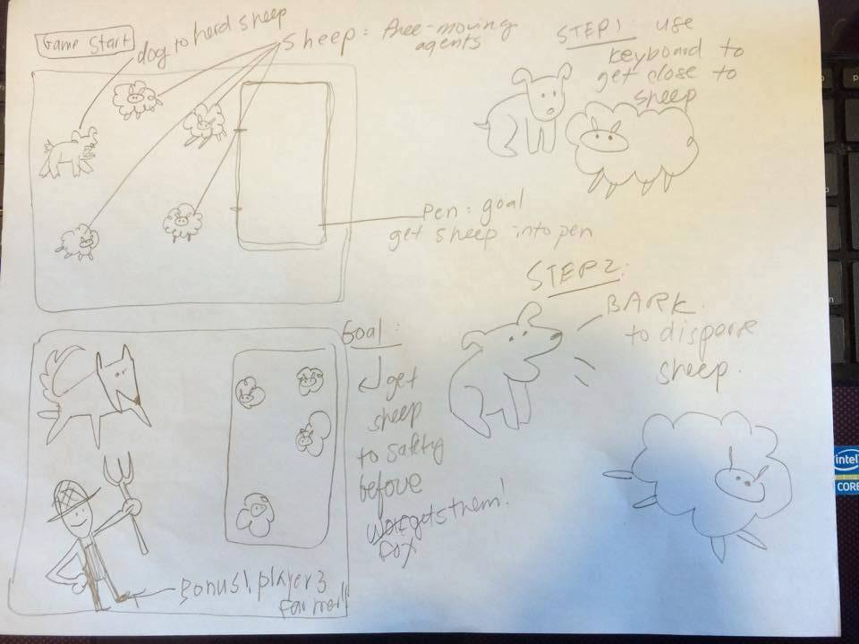

This game will be about herding sheep!!! The objective of the game will be to herd the sheep into the safe zone before time runs out, sun sets, and the big bad wolf comes and eats your sheep!!!
You, the player, are a dog. You will herd sheep like dogs do. You bark at the to go in a certain direction.
Yes. Bark. You will actually have to bark out loud, as this game features a sound component.
The sheep will be free-moving agents made from Perlin Noise, and when you bark, the sheep will go in the opposite direction of your bark.
So it may be a good idea, like an actual herder, to bark and herd your sheep in a particular position and then bark for them all to go in a particular direction
Or you can bark in a circle, too. Whatever will work. Just get the sheep into their pens!!!
Sometimes, you can special summon a 3rd player, the farmer! This is OP mode and the farmer will get your shep into the
pen right away!
Here is a sketch of the proposed project plans:
